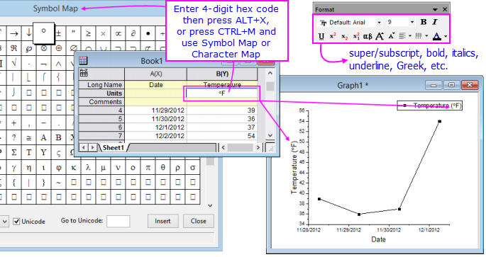
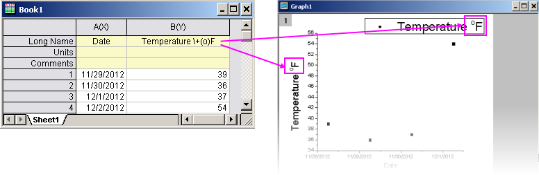
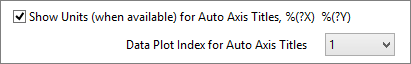

FAQ-149 Wie füge ich hochgestellte und tiefgestellte Zeichen und griechische Sonderzeichen in die Diagrammlegende und die Achsentitel aus den Arbeitsblattkopfzeilen ein?
Insert-Symbols-in-Legend
Letztes Update: 23.09.2022
Diagrammachsentitel und -legenden sind besondere Textbeschriftungen, die aus programmatisch verknüpften Daten in den Spaltenbeschriftungszeilen des Arbeitsblatts erstellt werden. Daher ist es am einfachsten, wenn Sie planen, Sonderzeichen in Achsentiteln oder Legenden zu verwenden, Zeichen zu den Beschriftungszeilen hinzuzufügen, anstatt zu versuchen, sie durch direkte Bearbeitung zu diesen Objekten hinzuzufügen.
- 
Verwandte FAQ:: FAQ-148 Wie füge ich Sonderzeichen in Textbeschriftungen ein?
Rich Text
Um komplexe Formatierung, einschließlich hoch- und tiefgestellte Zeichen, auf Text in Arbeitsblattzellen anzuwenden, müssen Sie Rich Text aktiviert haben. Per Standard ist Rich Text nur in den Zeilen Einheiten und Benutzerdefinierten Parameter aktiviert:
- Klicken Sie mit der rechten Maustaste auf eine Zeile oder Zelle im Arbeitsblatt und wählen Sie Stil des Objekts festlegen: Rich Text unten im Kontextmenü.
- Alternativ klicken Sie im Arbeitsblatt mit der rechten Maustaste in die graue Fläche auf der rechten Seite der Datenspalten und wählen Einstellungen im Kontextmenü aus. Klicken Sie auf die Registerkarte Format und aktivieren Sie Rich Text. Wählen Sie Anwenden auf und klicken Sie auf OK.
Sonderzeichen hinzufügen, Versionen 2018 und höher
Vor Origin 2018 mussten Sie Rich Text aktivieren, um Sonderzeichen in die Zellen der Spaltenbeschriftungszeilen einzugeben. Dies ist nicht mehr der Fall, da das Origin-Arbeitsblatt jetzt Unicode unterstützt.
- Klicken Sie doppelt in die Arbeitsblattzelle, um den Bearbeitungsmodus aufzurufen.
-
- Geben Sie den Hexcode mit 4 Zeichen für einen Codepunkt ein (z. B. 03BB für "λ") und drücken Sie dann ALT+X. Der Codepunkt wird eingefügt.
- Alternativ klicken Sie auf die rechten Maustaste und wählen Sie Abbildung Symbole (Strg+M). Wählen Sie Ihr Zeichen und Einfügen (Informationen zu den Dialogen Abbildung Symbol Einfach und Erweitert können Sie hier nachlesen).
Hinweise:
- Beim Einfügen von Unicode-Zeichen mit dem Hexcode mit 4 Zeichen und ALT+X müssen Sie die Schriftart wechseln, wenn die aktuelle Schriftart das Zeichen nicht enthält. Eine Anleitung dazu, welche Zeichensätze welche Zeichen unterstützen, finden Sie auf dieser externen Webseite.
- Wenn Sie planen, das Projekt im älteren (vor 2018, vor Unicode) OPJ-Format zu speichern, müssen Sie Rich Text aktivieren und den Dialog Abbildung Symbole verwenden, um Sonderzeichen einzufügen. Anweisungen finden Sie im nächsten Abschnitt.
Sonderzeichen hinzufügen, Versionen 2017 und älter
Die Versionen von Origin vor Origin 2018 unterstützen Unicode nicht. Um Sonderzeichen in das Arbeitsblatt einzugeben, müssen Sie Rich Text aktivieren. Siehe Rich Text oben.
Versionen 9.0 bis 2017:
Origin 9.0 und neuere Versionen von Origin unterstützen Rich Text sowohl für den Header (Spaltenbeschriftungszeile) als auch Datenteilsätze des Arbeitsblatts. Sie müssen Rich Text aktivieren, bevor Sie Sonderzeichen über die Abbildung Symbole oder die Symbolleistenschaltflächen Format (Griechisch, Hochgestellt/Tiefgestellt etc.) verwenden, um Text zu formatieren.
Versionen vor 9.0 In älteren Versionen können Sie Text auch in den Spaltenbeschriftungen mittels Escape-Sequenzen formatieren.
Der Nachteil hier ist, dass einige Formatierungsoptionen -- z. B. Tiefgestellt und Hochgestellt -- nicht richtig im Arbeitsblatt angezeigt werden (z. B. wandelt \+(o) das Symbol "o" in ein hochgestelltes Zeichen in der Diagrammlegende bzw. im Achsentitel um, die Arbeitsblattzelle kann jedoch nur die Notation mit Escape-Sequenzen anzeigen).
- 
Diagramm für die Verwendung von Daten aus Arbeitsblattheaderzeilen in Legenden und Achsentiteln einrichten
Anpassung des Legendentexts: Klicken Sie doppelt auf das Diagrammfenster, um den Dialog Details Zeichnung zu öffnen. Wählen Sie im linken Bedienfeld auf die Ebene Graph, gehen Sie dann im rechten Bedienfeld auf die Registerkarte Legenden/Titel und legen Sie für den Automatischer Übersetzungsmodus der Legende fest, Ihren Headertext zu verwenden. Wenn keine der verfügbaren Optionen funktioniert (beachten Sie, dass es eine Option @U: Long Name & Units gibt), wählen Sie Benutzerdefiniert/Custom und lesen Sie Anpassung des Legendentexts.
Anpassung der Achsentitel: Es gibt zwei Bedienelemente auf der Registerkarte Legende/Titel, die zum Konfigurieren der Achsentitel nützlich sind, um Arbeitsblattinformationen zu verwenden. Weitere Informationen hierzu und Weiteres zur Anpassung von Achsentiteln finden Sie unter Dialog Achsen, Titeltext.
-
- 
Sie können Ihre Anpassungen der Diagrammlegende und Achsentitel mit der Diagrammvorlage speichern, indem Sie Datei: Vorlage speichern unter wählen. Weitere Informationen finden Sie unter Origin-Vorlagentypen.
 |
Sie können den Text in den Achsentiteln und Legendenobjekten im Text direkt bearbeiten, indem Sie doppelt auf das Objekt klicken. Auf diese Weise gelangen Sie in den Modus der direkten Bearbeitung, in dem Sie die verborgenen LabTalk-Variablen überschreiben können, die den Titel und Legendentext mit Arbeitsblattmetadaten verknüpfen. Diese "Abkürzungsmethode" ist nicht ganz sauber und eignet sich im Allgemeinen nicht zum Speichern von Vorlagen, aber wenn der statische Text akzeptabel ist, funktioniert sie. Wenn Sie versuchen, auf diese Weise Sonderzeichen in Textbeschriftungen einzugeben, siehe FAQ-148 Wie füge ich Sonderzeichen in Textbeschriftungen ein?
|
Schlüsselwörter:Unicode, ALT+X, Angström, Grad, Mathematik, Umlaute, Diärese, akut, Tilde, Akzent, Makron, Zirkumflex, Plancks Konstante, Planck, Pi, hochgestellt, tiefgestellt, Arbeitsblattkopfzeilen